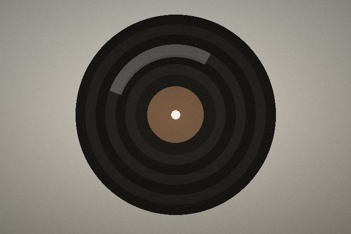

跳到主要内容
静帧
STILL FRAME
No.01 · The Paper Screening Room
←
封面
A Personal Archive · 私人档案
静
帧
这里收藏着一些旅行的片段、一段旋律、几部电影， 以及那些不急着结束的下午。

HANLIN JI — 嵇翰林
01
关于我
一份安静的个人档案。
→
02
旅行
去远一点，也去认识自己。
→
03
音乐
让声音替时间留下痕迹。
→
04
电影
在光影里，观看另一种人生。
→
05
游戏
在另一套规则里，走一段自己的路。
→
06
学习经历
一直在学习，也一直在重新认识自己。
→
07
关系
一些重要的人。
→
08
联系方式
如果你也喜欢安静地远行，欢迎来信。
→
09
远方来信
如果你也曾在某段旅途中停留，欢迎写下几句话。
→
继续放映
→